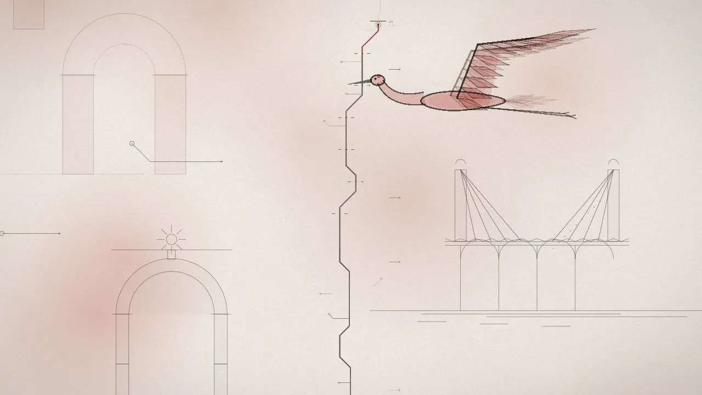
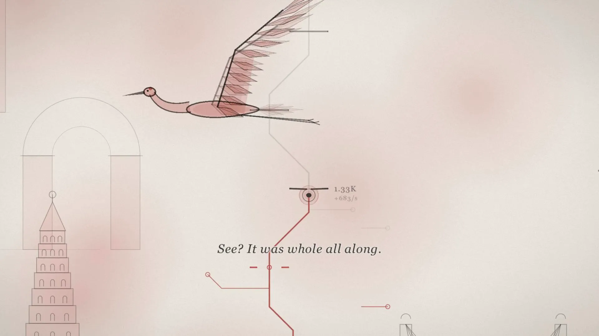

Floppy Key · Disk 03 · Free demo
just tap
If you had a bad day… just tap.
A small, gentle incremental game about getting through a grey day, one tap at a time. A line of ink climbs, the world draws itself around you, and slowly the colour comes back.
The trailer
Tap. Grow. Let the colour back in.
Nothing punishes you here. Some barriers push back; you grow a little, and try again.
Just tap
Click, tap or press Space. Each tap pushes the line into the barrier above it, and each barrier you break pays you in light.
Grow your tree
Barriers start healing themselves and your fingers stop being enough. Spend your light on the tree and come back stronger.
Watch it come back
Every ten barriers close a zone; every two zones, a colour returns to the world, washing over it like wet watercolour.
- 40 barriers in the free demo
- 7 upgrades in the tree
- 1 piece of music, and every tap is a note of it
- EN · ES voice and subtitles
Your tree is your build
Every barrier you break gives you light. How you spend it decides how the next wall falls: tap harder, tap in rhythm, or let the line beat on its own.
- 1
Strength · how hard each tap pushes. The root of everything.
- 2
Gain · more light from every barrier and every tap.
- 3
Pulse · the line beats on its own while you rest.
- 4
Resonance · taps in a row build a combo. Keep a rhythm.
- 5
Corrosion · barriers heal more slowly.
- 6
Echo · a tap can repeat itself.
- 7
Flash · a chance for a tap to hit four times as hard.

A world that draws itself as you climb
Every barrier you break draws one more piece of a giant structure in the distance: an arch, a bridge over water, a tower, a grove of trees, stroke by stroke, with a pen point at the tip.
Now and then a giant bird circles the tower. Its wings beat with the music, and it sings in the key that's playing.
And everything you hear is part of one piece: the taps, the breaks, the constructions, the bird. Nothing can sound out of tune.
“You don't have to fix the whole day. Just the next tap.”— the voice that keeps you company
Small lights. One shape.
At some barriers your light splits into many. Each one runs its own path of a turning star — a chord, an arc, a ray to the centre — and one tap pushes all of them at once.
What they run turns to gold. When every light reaches the centre, the star spins up, bursts, and stays behind in the background, painted.
The colour comes back
The world starts in grey. Every chapter brings back a colour, a feeling and a new way to tap.
- GreynumbnessIN THE DEMO
- RedangerIN THE DEMO
- GreengrowingFULL GAME
- Blueletting goFULL GAME
- NightbreakingFULL GAME
- MorningwarmthFULL GAME
The rest of the day
The demo is the morning. The full game goes through the whole day, and the morning after.
More than one thing at once
In the green, your line splits into branches that move out of step and play as a trio. Every branch has to arrive before you go on.
The tide
In the blue, the world breathes. Tap with the music, not against it.
The night
Everything goes dark and the line cracks. Get through before it breaks — and if it breaks, you come back stronger.
The whole city
Ten structures, one tower, every colour. And at the end, who the voice really is.
Had a bad day? Just tap.
A free demo with the first 40 barriers of the day, about half an hour, in your browser. Best with sound on. Made by one person in Argentina.